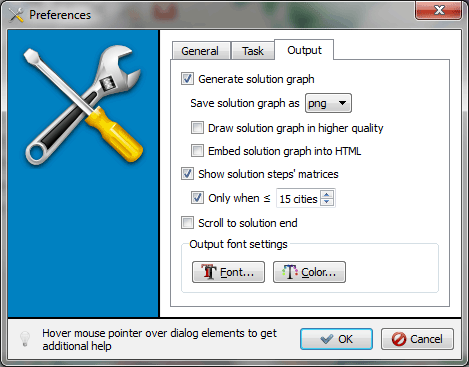
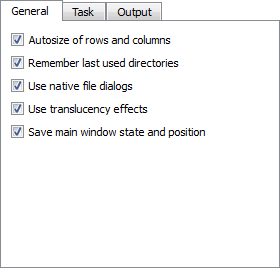
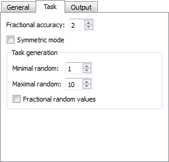
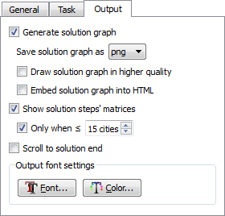

This dialog provides a way to set different user preferences. The parameters are grouped into three sections: General, Task and Output. Also, consult the "Hidden" Settings section that contains info about some additional settings. They might become available in this dialog in future.

Hover your mouse over a dialog element to get its short description at its bottom (Desktop platforms only).
Write where the settings are stored.
You can reset your settings by holding Shift and clicking OK button. You will be presented with the confirmation dialog. If you press Restore Defaults, all settings will be reset to their default values.
This section contains general application settings.

This section contains task related settings.

This section conatins solution output related settings.

There are some "hidden" settings that are unavailable in the Settings Dialog and can be set only through tspsg.ini file. These settings are described here.